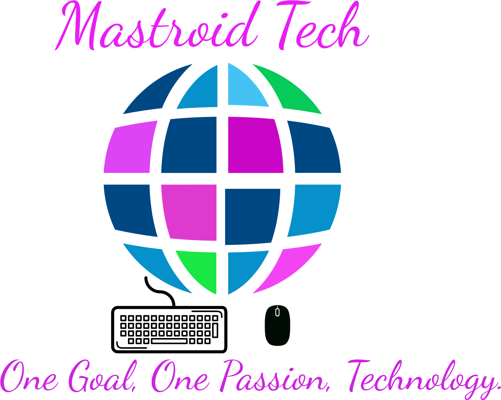

Mastroid Tech is a small company based in Memphis, Tn.
The company was launched in February of 2019, by
Christie Beason. Christie has an Associate's
Degree in Information Technology, Application
Development and a Bachelor's Degree in Information
Technology, Data Analytics.
As an extreme believer in technology and the incredible
things it can do.I know that behind every smart piece of
software,every powerful processor, and every brilliant
line of code is and even more brilliant person.
We apply technology and creativity to solve important
problems. We build the world's best technology and
products. Mastroid Tech creates, enhances and maintains
great products and services.
Contact Information:
Email: mastroidtech@gmail.com
beason.christie@outlook.com
Phone: (901) 246-2760
Payment Types:
Cash
PayPal: paypal.me/ChristieBeason
CashApp: $ChristieBeason
CashApp: $MastroidTech